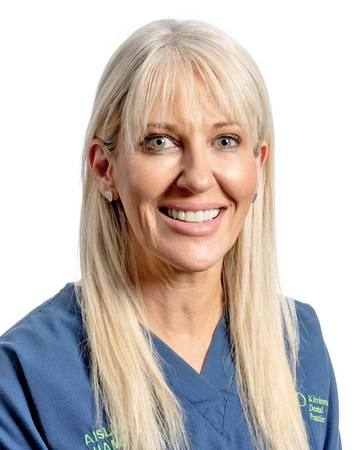
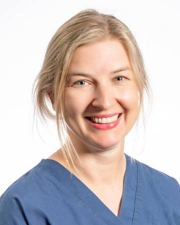
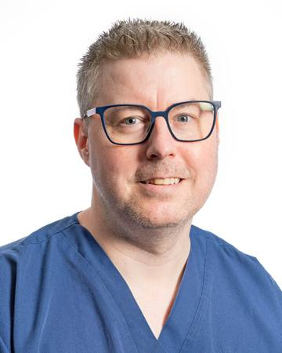
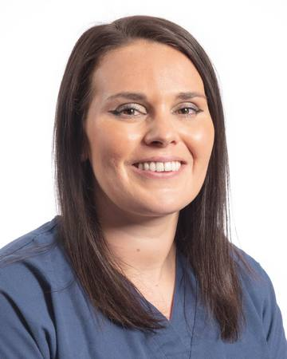
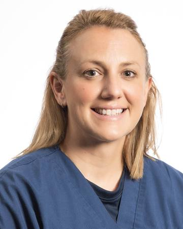
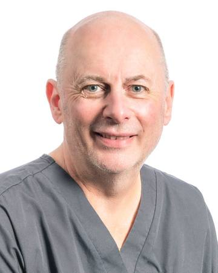
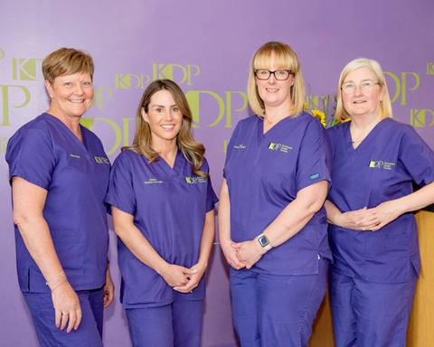

Meet the team
Kirriemuir Dental Practice has looked after families for over 50 years. These are the people you'll see, in the practice's own words.
Our dentists
Eight dentists, including the two partners who run the practice. When you join, you should be told which dentist will look after you.
-

Aisling Hanly FitzGerald
Partner and dentist
- Qualified
- Dundee, 1997
- Partner since
- 2010
- Interests
- Facial aesthetics
- GDC no.
- 73486
Aisling graduated from Dundee Dental School in 1997. She initially worked here at Kirriemuir Dental Practice and also at Blairgowrie Dental Care before eventually choosing to work full-time at KDP. Aisling became partner in 2010.
Along the way, Aisling also worked in the Children's Department at Dundee Dental Hospital teaching undergraduates. She also spent several years involved with the post-graduate mentoring programme, assisting post-graduate dentists with their transition into general dental practice.
In 2009, Aisling started specialising in facial aesthetics. She has trained extensively in the UK and abroad with top plastic surgeons and aesthetic doctors. Aisling also held a teaching post at Renu Academy in Dundee.
Aisling was one of the first practitioners to offer Silhouette Soft Thread Lift north of the central belt and was invited to attend World Expert Meeting in Barcelona in 2019. She has featured several times in "Who's Who" of Scottish Dentistry Publication and in 2016 was awarded Aesthetic Dentist of the Year at the Scottish Medical Aesthetic Awards.
Aisling has her aesthetic clinic, Enhance Facial Aesthetics, at KDP. She splits her working time between facial aesthetics and dentistry.
-

Sam Cobley
Partner and dentist
- Qualified
- Dundee, 2004
- Joined us
- 2005
- Partner since
- 2018
- Interests
- Dental implants
- GDC no.
- 83274
Sam graduated from Dundee Dental School in 2004. After working for a year in Forfar, he settled down in Kirriemuir in 2005 and became a partner in KDP in 2018.
Sam enjoys all aspects of dentistry but has a special interest in implant dentistry, having had extensive training in this field. He has attended courses and hands-on training workshops throughout the UK, Europe and Asia, and places implants here at KDP.
Sam is a member of the ITI and continues to keep abreast of new and exciting developments in the dental implant field. Sam is married and has 3 children.
-

Michael Byrne
Dentist
- Qualified
- Dundee, 2015
- Joined us
- 2016
- From
- Northern Ireland
- GDC no.
- 257746
Originally from Northern Ireland, Michael graduated from the University of Dundee in 2015 and joined KDP a year later. He enjoys all aspects of dentistry and tailoring each patient's treatment plan based on their goals and wishes to achieve the best long term outcome possible.
Michael is a bit of a petrol-head! He loves to get out on his motorbike and tinker with his car. His favourite thing is spending time with his partner, enjoying good food and days out. A big kid at heart too, he loves a set of Lego!
-

Ola Easson
Dentist
- Qualified
- Gdansk, 2011
- Interests
- Restorative dentistry, jaw joint problems
- GDC no.
- 249688
Ola graduated from the Medical University of Gdansk in 2011. Ola has attended numerous courses both in the UK and abroad, and has a postgraduate diploma in restorative dentistry. Ola enjoys improving smiles and helping patients keep their mouths in good oral health.
The Dawson Academy Curriculum that she completed allows her to help patients with jaw joint problems and occlusal disease. Ola enjoys the challenges of diagnosing and treating complex dental cases.
Her philosophy is to provide top quality dentistry, achieving the desired results with minimally invasive techniques. During treatment, patient comfort and wellbeing are Ola's top priorities. She ensures adequate time is dedicated to listening to her patients' clinical desires and discussing all available options.
-

Alan McCarthy
Dentist
- Qualified
- Newcastle, 2017
- Joined us
- August 2018
- Interests
- Worn teeth
- GDC no.
- 277600
Alan is from County Durham in England, where he first studied Biomedical Sciences at Sunderland University and graduated there in 2010. He then went on to study Dentistry at Newcastle University and graduated with a Bachelor of Dental Surgery in 2017. Alan has been part of the KDP team since August 2018.
He enjoys all aspects of dentistry but has interests in wear cases. During his spare time, he likes spending time with family, hiking and motor racing.
Alan is liked by many patients here.
-

Nicole Kettles
Dentist
- Qualified
- Aberdeen, 2014
- Sees
- NHS and private patients
- GDC no.
- 252056
Nicole qualified in 2009 with an honours degree in anatomy and physiology from the University of Dundee. Nicole then went on to pursue her lifelong ambition, studying dentistry, qualifying in 2014 from Aberdeen University.
She completed her vocational training in Coupar Angus, then worked as an associate in nearby Perth before joining the team at KDP. Nicole is a member of the Tayside Local Dental Committee, having an interest in current affairs directly affecting our local dental teams.
Nicole provides both NHS and private treatment for all patients. She hopes to continue to expand her expertise in future, providing patients with a variety of treatment options.
In her spare time Nicole has a keen interest in travelling and enjoys going to live music events. Nicole is also a Disney fan and has even spent a summer working at Walt Disney World in Florida. Nicole likes to keep fit and enjoys relaxing long walks with her dog.
-

Jane Leslie
Dentist
- Qualified
- Aberdeen, 2013
- Joined us
- March 2021
- Interests
- Family dentistry
- GDC no.
- 244698
Jane originally studied Forensic Anthropology at the University of Dundee, graduating with BSc (Hons) in 2009. She then went on to study dentistry in Aberdeen, qualifying in 2013.
Following her vocational training in Dundee, she worked in general practice in Arbroath for nearly 7 years before joining the team here in March 2021.
Jane enjoys all aspects of family dentistry.
-

Clare Perez
Dentist
- Qualified
- Glasgow, 2006
- Joined us
- 2022
- Sees
- NHS and private patients
- GDC no.
- phone to check
Clare joined the KDP team in 2022, offering both NHS and private treatment. She graduated from Glasgow Dental School in 2006 with commendation, has completed post-graduate courses in restorative dentistry and gained a Master's degree in Public Health with honours.
She takes pride in providing a high quality of care, in a relaxed and friendly environment, helping patients to improve their oral health, along with confidence in their smile, while making informed decisions regarding their dental treatment.
Clare has worked in Fife, Edinburgh and Aberdeen, as well as abroad. She is married with 2 young boys and enjoys walking her dog and baking.
Our hygienists
Our hygienists see patients privately. They clean and polish teeth, treat gum disease and show you how to keep your mouth healthy. A visit costs £59.
-

Beverley Thomson
Dental hygienist
Beverley has been a dental hygienist for over thirty years and brings a calm, reassuring approach to patient care. With a diploma in hypnotherapy and specialist training in anxiety management, she is passionate about helping nervous patients feel relaxed and comfortable during their visits. Outside of work she enjoys making her own jewellery.
GDC number 3727
-

Julie White
Dental hygienist, here since 2003
The part of her job Julie enjoys the most is meeting new people and helping people achieve a lovely healthy smile. She has two daughters and in her free time she enjoys having days out with them. Julie also likes to go running and has recently started learning to roller skate.
GDC number 5978
-

Clair Ruxton
Dental hygienist
GDC number 6617
Our clinical dental technician
A clinical dental technician makes and fits dentures.
-

Sean Ward
Clinical dental technician (dentures)
- Trained
- Newcastle College
- Diploma
- Clinical Dental Technology, Royal College of Surgeons Edinburgh
Sean is a Clinical Dental Technician or Denturist. He originally qualified in engineering in the RAF and on leaving retrained as a Dental Technologist at Newcastle College. After working in commercial labs in the North of England he relocated to Scotland as a research technician at the dental school in Dundee.
He returned to the "Bench" working in labs in Tayside until he was able to open up his own lab within a dental practice in Montrose. With this opportunity of seeing his work fitted to patients, he enrolled on the clinical course at The University of Lancashire in Preston, gaining a Diploma in Clinical Dental Technology from the Royal College of Surgeons Edinburgh.
Sean enjoys the interaction with his patients, and this helps with ensuring the patients' needs are met as he carries out the technical and clinical work relating to dentures. He is always looking to improve his clinical and technical knowledge and also pass on his skills to others, which led to him teaching remotely on the technician's course at Cardiff Metropolitan University.
Sean is married with two daughters and a wee dog and loves his football, food and a pint on a Friday.
Managers, nurses and reception
The people who run the practice, help in the surgery and answer the phone.
-

Kelly Cobley
Practice manager
-

Emma Millar
Practice manager

Photographed at reception, in front of the KDP wall.

They're who you'll speak to when you phone 01575 572711, and who'll help you with the forms to join our dental plan.